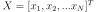
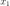
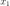
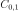

numpy.cov¶
-
numpy.cov(m, y=None, rowvar=True, bias=False, ddof=None, fweights=None, aweights=None)[source]¶ Estimate a covariance matrix, given data and weights.
Covariance indicates the level to which two variables vary together. If we examine N-dimensional samples, , then the covariance matrix element
 is the covariance of
is the covariance of
 and
and  . The element
. The element  is the variance
of .
is the variance
of .See the notes for an outline of the algorithm.
- Parameters
- marray_like
A 1-D or 2-D array containing multiple variables and observations. Each row of m represents a variable, and each column a single observation of all those variables. Also see rowvar below.
- yarray_like, optional
An additional set of variables and observations. y has the same form as that of m.
- rowvarbool, optional
If rowvar is True (default), then each row represents a variable, with observations in the columns. Otherwise, the relationship is transposed: each column represents a variable, while the rows contain observations.
- biasbool, optional
Default normalization (False) is by
(N - 1), whereNis the number of observations given (unbiased estimate). If bias is True, then normalization is byN. These values can be overridden by using the keywordddofin numpy versions >= 1.5.- ddofint, optional
If not
Nonethe default value implied by bias is overridden. Note thatddof=1will return the unbiased estimate, even if both fweights and aweights are specified, andddof=0will return the simple average. See the notes for the details. The default value isNone.New in version 1.5.
- fweightsarray_like, int, optional
1-D array of integer frequency weights; the number of times each observation vector should be repeated.
New in version 1.10.
- aweightsarray_like, optional
1-D array of observation vector weights. These relative weights are typically large for observations considered “important” and smaller for observations considered less “important”. If
ddof=0the array of weights can be used to assign probabilities to observation vectors.New in version 1.10.
- Returns
- outndarray
The covariance matrix of the variables.
See also
corrcoefNormalized covariance matrix
Notes
Assume that the observations are in the columns of the observation array m and let
f = fweightsanda = aweightsfor brevity. The steps to compute the weighted covariance are as follows:>>> m = np.arange(10, dtype=np.float64) >>> f = np.arange(10) * 2 >>> a = np.arange(10) ** 2. >>> ddof = 1 >>> w = f * a >>> v1 = np.sum(w) >>> v2 = np.sum(w * a) >>> m -= np.sum(m * w, axis=None, keepdims=True) / v1 >>> cov = np.dot(m * w, m.T) * v1 / (v1**2 - ddof * v2)
Note that when
a == 1, the normalization factorv1 / (v1**2 - ddof * v2)goes over to1 / (np.sum(f) - ddof)as it should.Examples
Consider two variables,
 and , which
correlate perfectly, but in opposite directions:
and , which
correlate perfectly, but in opposite directions:>>> x = np.array([[0, 2], [1, 1], [2, 0]]).T >>> x array([[0, 1, 2], [2, 1, 0]])
Note how
increases while decreases. The covariance
matrix shows this clearly:>>> np.cov(x) array([[ 1., -1.], [-1., 1.]])
Note that element , which shows the correlation between
and , is negative.Further, note how x and y are combined:
>>> x = [-2.1, -1, 4.3] >>> y = [3, 1.1, 0.12] >>> X = np.stack((x, y), axis=0) >>> np.cov(X) array([[11.71 , -4.286 ], # may vary [-4.286 , 2.144133]]) >>> np.cov(x, y) array([[11.71 , -4.286 ], # may vary [-4.286 , 2.144133]]) >>> np.cov(x) array(11.71)